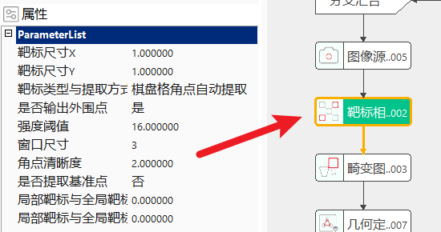
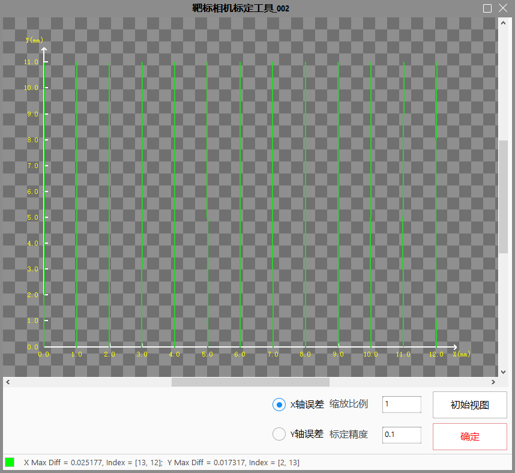
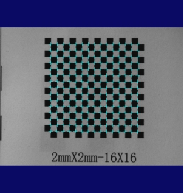
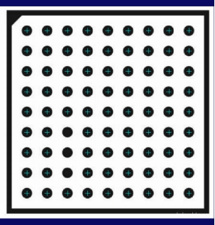
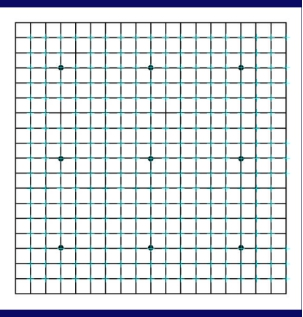
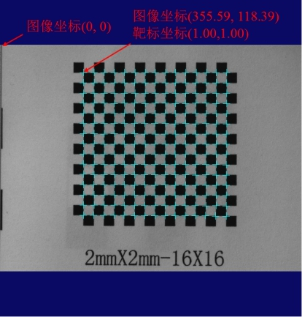

靶标相机标定工具是用来进行相机标定的，计算出相机的内外参数。靶标相机标定工具的标定结果可以用于图像校正，提高测量或者检测精度，因此常与畸变图像校正工具搭配使用。
靶标相机标定工具首先根据靶标图像建立空间平面到图像平面的成像模型，然后求解该成像模型的参数，以此确定真实物理空间与图像像素空间之间的映射关系。根据这种映射关系我们才能在物体的图像尺寸和真实尺寸之间建立正确有效的联系，才能最终实现空间层次上的测量，因此靶标相机标定工具对于二维几何测量具有十分重要的意义。
工具的执行流程：配置输入 -> 属性栏设置-> 执行计算。
参数链输入为靶标图像，链接一张灰度图。


高级属性界面可查看角点的误差（真实点和理想点之间的误差）。如上图所示显示的是初始试图，可选择X轴误差或者Y轴误差查看；缩放比例可实现对X轴或者Y轴实现压缩显示；标定精度判定标定真实值与理想值的最大差距，若大于则认为标定点为红色点。
| 分类 | 参数名称 | 参数描述 |
|---|---|---|
| 属性窗口 | 靶标尺寸X | 每个靶标格的横向尺寸，单位mm，默认为1mm。 |
| 靶标尺寸Y | 每个靶标格的纵向尺寸，单位mm，默认为1mm。 | |
| 靶标类型与提取方式 | 靶标类型与提取方式分为3种：棋盘格角点自动提取，点阵靶标特征点自动提取，线阵靶标特征点自动提取。选择棋盘格角点自动提取，则是否输出外围点参数和外围点强度参数属性可见。 |
|
| 是否输出外围点 | 选择“是”，显示定位到的最外围的有效角点，并显示外围点强度参数（仅在棋盘格角点自动提取时有效）。 | |
| 是否提取基准点 | 选择“是”，提取靶标基准点，并且基准点是否中心位置参数属性可见。（中心位置描述：棋盘格靶标的四个角点的中心；点阵靶标的点中心；网格线靶标的网格线四个交点中心）。 | |
| 强度阈值 | 黑白格的灰度差异程度，提取的角点对应强度要高于该阈值，范围为[1, 255] | |
| 窗口尺寸 | 推荐设置为一个棋盘格的像数宽度的大小，范围为[1, 500] | |
| 角点清晰度 | 角点越尖锐清晰值越小，越模糊值越大，范围为[0,1000] | |
| 局部靶标与全局靶标位置关系X | 局部靶标与全局靶标在横向方向的偏差量，单位mm，默认为0。 |
|
| 局部靶标与全局靶标位置关系Y | 局部靶标与全局靶标在纵向方向的偏差量，单位mm，默认为0。 |
|
| 图像窗口 | 输入图像 | 显示靶标图像。 |
| 数据链 | 靶标图像 | 输入靶标图像。 |
| 高级界面 | X轴误差 | 显示X轴方向误差 |
| Y轴误差 | 显示Y轴方向误差 | |
| 缩放比例 | 轴压缩比例，范围为(0,1] | |
| 标定精度 | 判定标定真实值与理想值的最大差距，若大于则认为标定点为红色点，范围为(0,0.5] |
| 分类 | 参数名称 | 参数描述 |
|---|---|---|
| 监视窗口 | 输出图像 | 输出靶标图像宽度、高度、像素大小。 |
| 相机标定结果 | 相机标定的标定结果，是相机成像模型的参数，即相机的内外参数和畸变参数。 | |
| 像素当量 | 标定计算得到的像素当量，即每个像素代表的实际物理尺寸，单位mm/pixel。 | |
| 基准标记点 | 属性窗口的是否提取基准点参数选择“是”时，输出基准标记点的图像坐标。 | |
| 局部靶标与全局靶标位置关系 | 局部靶标与全局靶标的位置，即X、Y方向的偏移关系，同属性窗口的局部靶标与全局靶标位置关系参数。 | |
| 有效角点的畸变图像坐标 | 靶标图像所定位到的角点的图像坐标组成的向量。 | |
| 有效角点的全局靶标坐标 | 靶标图像所定位到的角点在全局靶标坐标系下的坐标组成的向量。 | |
| 靶标图像坐标 | 靶标图像所定位到的角点的畸变图像坐标向量与全局靶标坐标向量组成的向量，且其中这两个向量中的角点一一对应。 | |
| 执行结果 | 工具执行结果。 | |
| 执行时间 | 工具执行时间。 | |
| 图像窗口 | 输出图像 | 显示工具执行结果图像，同监视窗口的输出图像参数。 |
| 角点 | 显示所有定位到的有效角点。 | |
| 基准点 | 属性窗口的是否提取基准点参数选择“是”时，显示所提取到的基准点。 | |
| 执行结果 | 显示工具执行结果，执行成功显示“OK”，执行失败显示“NG”，同监视窗口的执行结果参数。 | |
| 数据链 | 相机标定结果 | 靶标相机标定的标定结果，供后序工具使用，同监视窗口的相机标定结果参数。 |
| 像素当量 | 标定计算得到的像素当量结果，供后序工具使用，同监视窗口的像素当量参数。 | |
| 局部靶标与全局靶标位置关系 | 局部靶标与全局靶标的位置，即X、Y方向的偏移关系，供后序工具使用，同监视窗口的局部靶标与全局靶标位置关系参数。 | |
| 有效角点的畸变图像坐标 | 输出靶标图像所定位到的所有有效角点的图像坐标组成的向量，供后序工具使用，同监视窗口的有效角点的畸变图像坐标参数。 | |
| 有效角点的全局靶标坐标 | 输出靶标图像所定位到的所有有效角点在全局靶标坐标系下的坐标组成的向量，供后序工具使用，同监视窗口的有效角点的全局靶标坐标参数。 | |
| 靶标图像坐标 | 所有有效角点的畸变图像坐标向量与全局靶标坐标向量组成的向量，且其中这两个向量中的角点一一对应，供后序工具使用，同监视窗口的靶标图像坐标参数。 |
为了确定真实物理空间与图像像素空间之间的映射关系，通过相机拍摄带有固定间距图案的靶标、经过标定算法的计算，得出相机的几何模型，从而使物体的图像尺寸和真实尺寸之间建立正确有效的联系，最终实现空间层次上的测量。因此，通过靶标图案的不同，可以分为棋盘格角点自动提取，点阵靶标特征点自动提取，线阵靶标特征点自动提取，其效果如图1所示。
  
该参数反映的是局部靶标与全局靶标在X、Y方向上的偏差量。例如，局部靶标与全局靶标位置关系取值为(0.00, 0.00)时，左上角的角点的靶标坐标为(0.00, 0.00)；而局部靶标与全局靶标位置关系取值为(1.00, 1.00)时，左上角的角点的靶标坐标为(1.00, 1.00)，在全局靶标坐标系下向X轴和Y轴正方向上偏移一个单位（其它角点以此类推），如图2所示。

此时的相机标定是计算相机的内外参数以及畸变参数，标定结果是图像坐标系与世界坐标系的关系；不同于标准/高精度/触碰/相机轴标定计算工具的标定计算，标定结果是计算图像、平台及轴坐标系间的转换关系；
标定时指定的靶标尺寸应与棋盘格或其他靶标的实际尺寸相同，这样标定的结果才能准确用于实际测量。
靶标相机标定的结果可用于畸变图像坐标校正工具与畸变图像校正工具，因而搭建工程中会搭配使用。
参见“\Samples\靶标相机标定工具.gvp”。